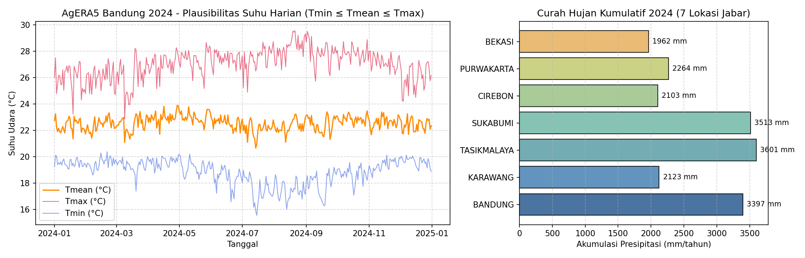
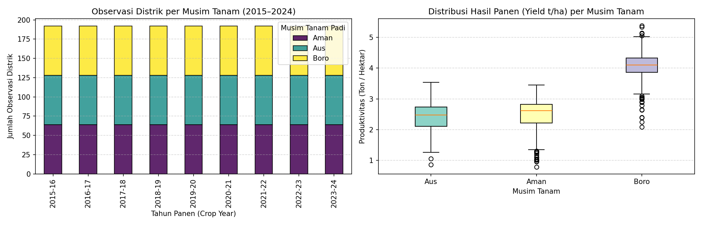
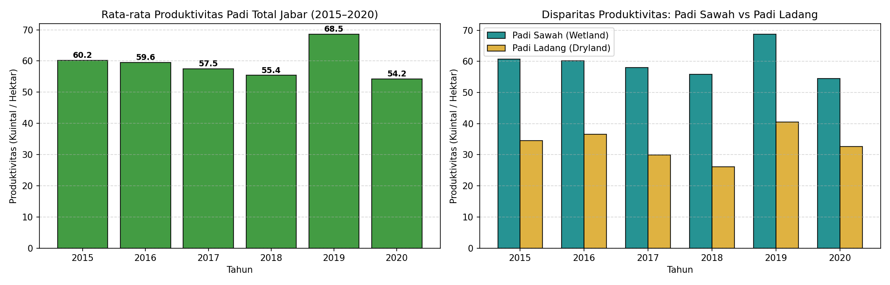
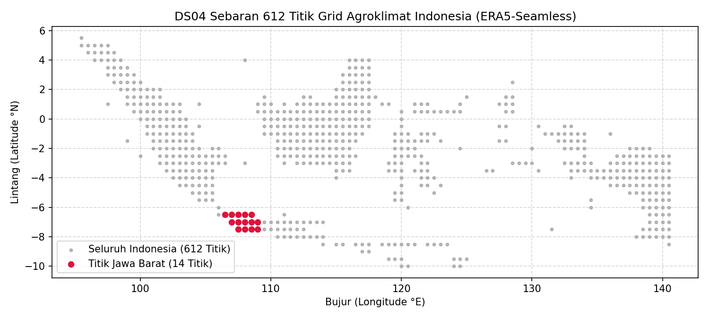
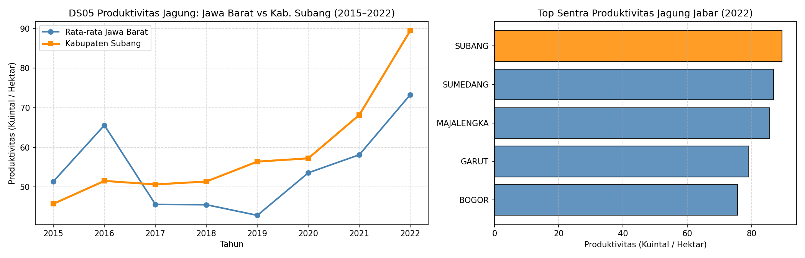
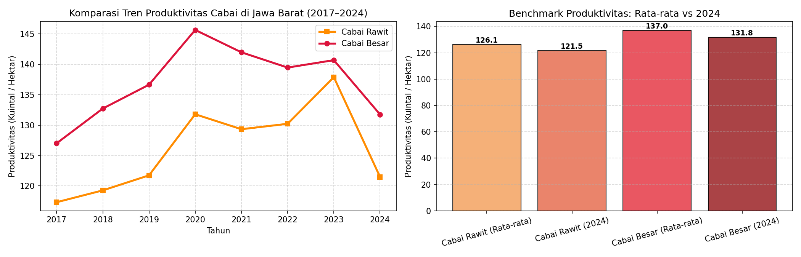

Evidence-Based Decision Support System | Executive Audit Dashboard for Six In-Scope Datasets
| Dataset ID | Title | Role in TaniAdapt | Temporal Cadence | Coverage | Missing (%) | Disposition |
|---|---|---|---|---|---|---|
| DS01 | AgERA5 Time-Series | Primary Weather Backbone | Daily (10 years) | 7 Jabar Locations (2015-2024) | 0.00% | PASS |
| DS02 | Bangladesh Rice Panel | Methodological Benchmark | Crop-Season / Annual | 64 Districts (2015-2024) | 0.00% | PASS |
| DS03 | West Java Rice Productivity | Regional Rice Target | Annual | 27 Kab/Kota (2015-2020) | 0.00% | PASS |
| DS04 | Indonesia Agroclimatic | Agroclimate Indicators | Daily (10 years) | 612 National Grid Points | 0.00% | PASS |
| DS05 | Subang Maize Productivity | Regional Maize Target | Annual | 27 Kab/Kota (2015-2022) | 0.00% | PASS |
| DS06 | West Java Horticulture (Chili) | Regional Chili Target | Annual | Provincial & Kab/Kota | 0.00% | PASS |

Verifies Tmin ≤ Tmean ≤ Tmax across 365 days of 2024 in Bandung.

Annual district observations across Aus, Aman, and Boro rice crops.

Productivity across 27 Kabupaten/Kota in Ku/Ha (2015–2020).

612 grid points across the Indonesian archipelago (0.5° resolution).

Comparison of Kabupaten Subang against West Java provincial average.

Historical productivity trends for Cabai Besar and Cabai Rawit (2017–2025).